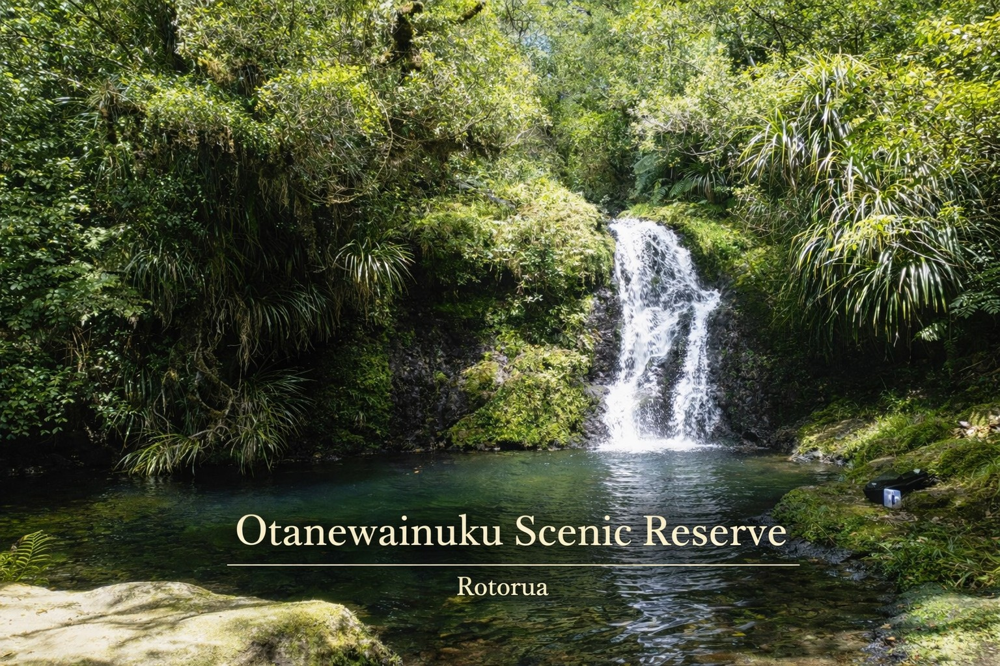
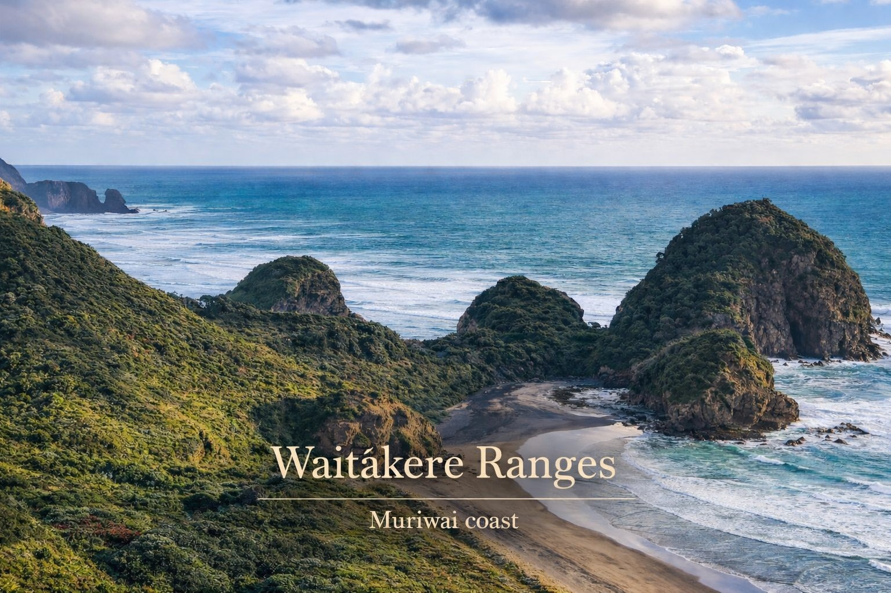
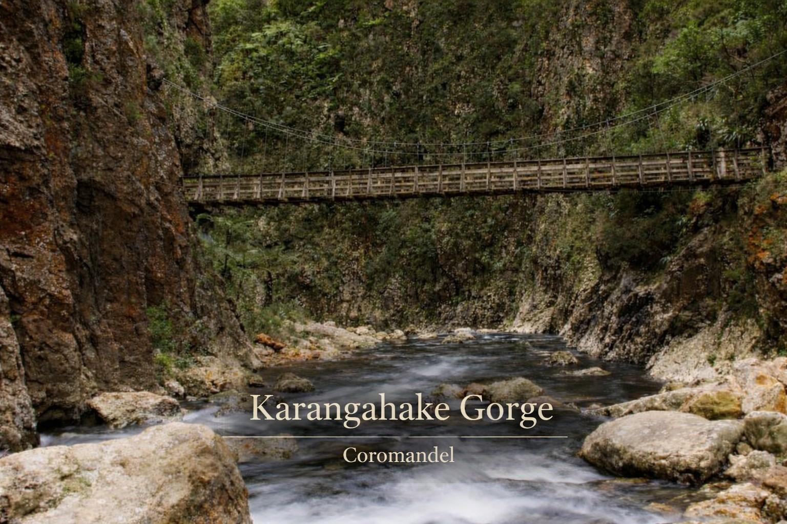
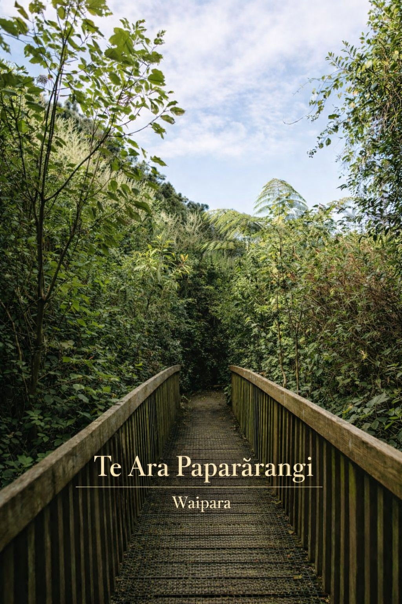

Forest walks & nature trails
Under the canopy, pace slows to the rhythm of roots and light.
Redwoods Treewalk (Whakarewarewa Forest)
An elevated walkway among towering redwoods that immerses you in a magical forest, especially at dusk. A unique experience blending nature and design in the heart of Rotorua.
Stay at Pāmu, Rotorua →